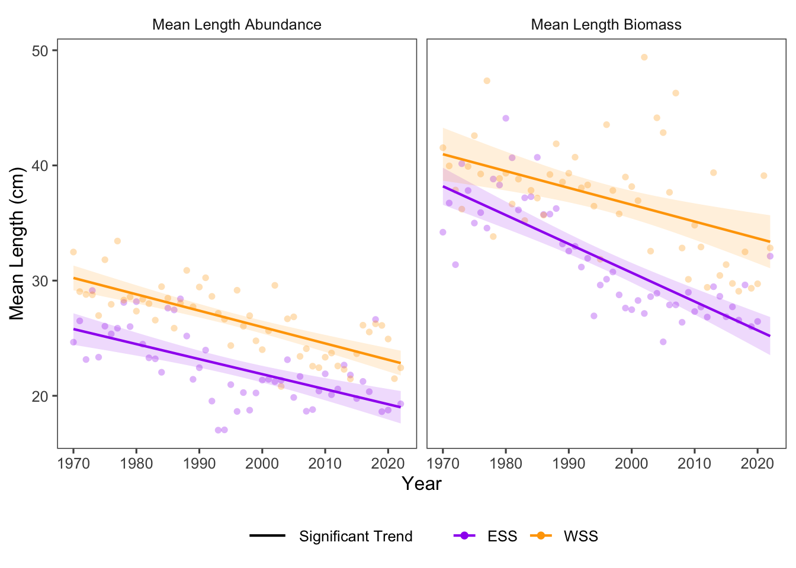

22 Size Structure - Fish Community
Data Type: Tabular Data (within eco_indicators)
Spatial Scope: Maritimes
Duration 1970-2022
Source: Bundy et al. 2017
22.1 Introduction to Indicator
The eco_indicators dataset provides indicators of ecosystem structure with focus on the size structure of the fish community (Bundy, Gomez, and Cook 2017).
- Mean Length (Biomass): Mean length of fish, weighted by biomass.
- Mean Length (Abundance): Mean length of fish, weighted by abundance.
Changes in mean length are indicative of changes to community structure and function. Decreases in mean length might indicate pressure from harvesting of large individuals or resource limitations. Alternatively, increases in mean length could indicate increases in resource availability for resident species, increases in metabolism due to environmental change, or filtering of small individuals through recruitment-limiting factors.
22.2 View Data
library(tidyr)
library(plotly)
library(stringr)
plotly_df <- data@data %>% inner_join(global_cols3)
# function to create plot with dropdown menu ------------------------------
make_size_dropdown_plot <- function(df,
year_col = "year",
region_col = "region",
value_suffix = "_value") {
# convert to long format
long <- df %>%
janitor::clean_names() %>%
pivot_longer(
cols = ends_with(value_suffix),
names_to = "metric",
values_to = "value"
) %>%
# remove suffix
mutate(
metric = str_remove(metric, "_value")
) %>%
# drop NAs (some regions don't have data for some variables or years)
tidyr::drop_na(value)
# find all metrics and regions
metrics <- unique(long$metric)
regions <- unique(long[[region_col]])
# assign regions to consistent colors
# region_colors <- setNames(hcl.colors(length(regions), palette = "Dark 3"), regions)
# clean names for dropdown panels, helper
pretty_label <- function(x) str_to_title(gsub("_", " ", x))
# build plot -----------------
p <- plot_ly()
# Add bar traces: metric1 has region1..K, metric2 has region1..K, ...
for (metric_i in seq_along(metrics)) {
m <- metrics[metric_i]
for (region_i in regions) {
dat <- long %>%
filter(metric == m, .data[[region_col]] == region_i) %>%
group_by(.data[[year_col]],color, linetype, linewidth, region_group, region_group_label) %>% # in case you have multiple rows per year
summarise(value = sum(value), .groups = "drop") %>%
arrange(.data[[year_col]])
group_name <- unique(dat$region_group)
color <- unique(dat$color)
linetype <- unique(dat$linetype)
width <- unique(dat$linewidth)
# If a region truly has no data for that metric, add an empty trace
# (keeps trace indexing stable)
if (nrow(dat) == 0) {
dat <- tibble::tibble(!!year_col := integer(0), value = numeric(0))
}
p <- p %>% add_lines(
data = dat,
x = ~.data[[year_col]],
y = ~value,
name = as.character(region_i),
legendgroup = group_name,
legendgrouptitle = list(
text =
ifelse(region_i == "4VN" & group_name == "ESS",
"Eastern Scotian Shelf Zones",
ifelse(region_i == "4X",
"Western Scotian Shelf Zones",
NA))),
showlegend = (metric_i == 1),
visible = (metric_i == 1),
line = list(color = color, dash = linetype),
hovertemplate = paste0("<b>", region_i,":</b> ","%{y:.3f}<extra></extra>") )
}
}
n_regions <- length(regions)
n_traces <- length(metrics) * n_regions
buttons <- lapply(seq_along(metrics), function(metric_i) {
vis <- rep(FALSE, n_traces)
shl <- rep(FALSE, n_traces)
idx_start <- (metric_i - 1) * n_regions + 1
idx_end <- metric_i * n_regions
vis[idx_start:idx_end] <- TRUE
shl[idx_start:idx_end] <- TRUE
list(
method = "update",
args = list(
list(visible = vis, showlegend = shl),
list(
title = pretty_label(metrics[metric_i]),
yaxis = list(title = pretty_label(metrics[metric_i]),
fixedrange=TRUE)
)
),
label = pretty_label(metrics[metric_i])
)
})
p %>%
layout(
barmode = "stack",
hovermode = "x unified",
title = pretty_label(metrics[1]),
xaxis = list(title = str_to_title(year_col)), # keep one bar per year
yaxis = list(title = pretty_label(metrics[1]),
fixedrange = TRUE),
legend = list(
title = list(text = str_to_title(region_col)),
x = 1.02, xanchor = "left",
y = 1, yanchor = "top",
groupclick = "toggleitem"
),
updatemenus = list(list(
type = "dropdown",
x = -.1, xanchor = "left",
y = 1.15, yanchor = "top",
buttons = buttons
)),
margin = list(r = 180, t = 80)
)
}
# usage:
p <- make_size_dropdown_plot(plotly_df)
p <- p %>% config(displayModeBar= F)
pFigure 22.1: Size Structure Indicators in all NAFO regions and Scotian Shelf regions overall. Use dropdown menu to select indicator, and click legend to isolate regions.
22.3 Trends
Across the Scotian Shelf, fish size is has decreased over time. Despite some variation between NAFO zone subunits (Fig. 22.1), mean size has significantly decreased by both metrics in both Scotian Shelf regions (ESS, WSS) over time (Fig. 22.2).

Figure 22.2: Top of the Food Web trends for ESS and WSS
22.3.1 Summary Table by NAFO Region and size Variable
Trends of each size variable for each NAFO region within the Eastern and Western Scotian Shelf (1970-2022) are shown below (Table 22.1).
| variable | Eastern Scotian Shelf Trends | Western Scotian Shelf Trends |
|---|---|---|
| Mean Length Abundance Value |
4VN: -2.39e-01 ∗ 4VS: -1.34e-01 ∗ 4W: -7.79e-02 ∗ |
4X: -1.42e-01 ∗ |
| Mean Length Biomass Value |
4VN: -3.23e-01 ∗ 4VS: -3.38e-01 ∗ 4W: -1.89e-01 ∗ |
4X: -1.46e-01 ∗ |
22.4 Relevance to Research and Stock Assessments
Decreases in mean length of fish are directly relevant to fisheries and stock assessments, although they can be interpreted as both an effect of fisheries activities, and having consequences on future fisheries.
Decreasing size structure of the fish community indicates that large individuals are not as common as they once were. This trend is, in part, linked to harvesting activities (Bell et al. 2018), but could also be related to resource limitations and changes in suitability across space. Because large fish have disporportionately higher reproductive output than smaller fish (Barneche et al. 2018), decreasing average size also has implications for community replenishment and resilience.
22.5 Variable Definitions
| variable | description | unit |
|---|---|---|
| year | Year of trawl survey | |
| region | Region over which values are summarized | |
| MeanLengthBIOMASS_value | Average length of fish, weighted by biomass | cm |
| MeanLengthABUNDANCE_value | Average length of fish, weighted by biomass | cm |